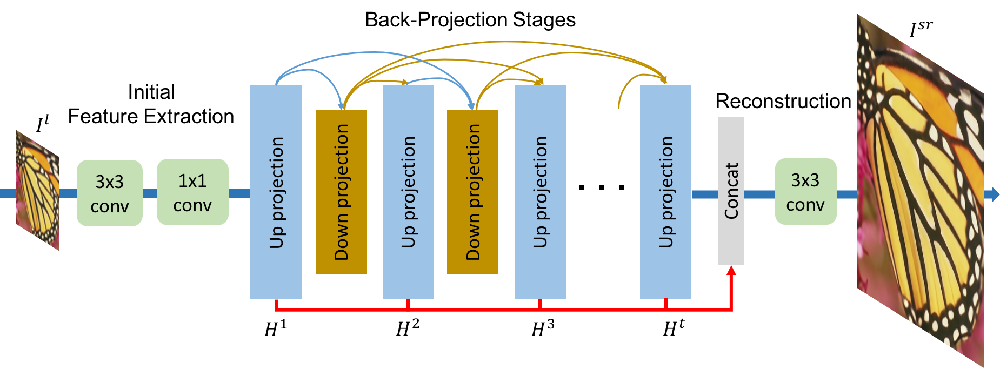
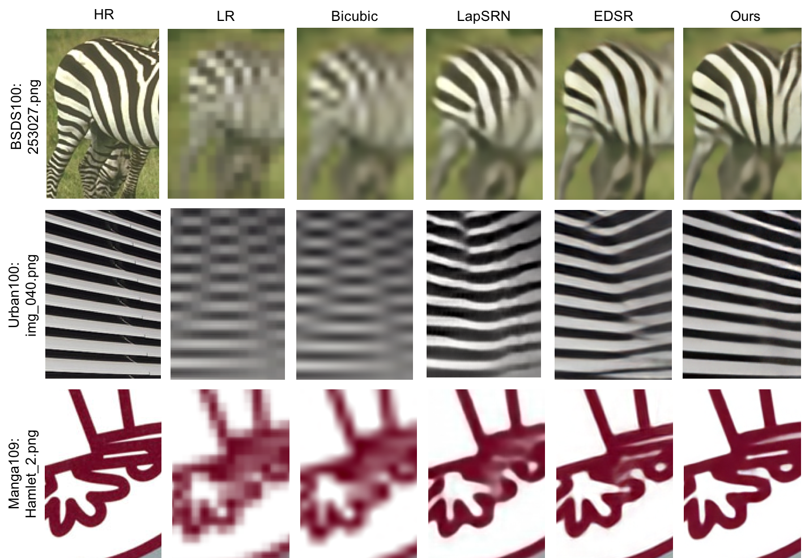

Deep Back-Projection Networks For Super-Resolution
Muhammad Haris,
Greg Shakhnarovich,
Norimichi Ukita
Winner (1st) of NTIRE2018 Competition (Track: x8 Bicubic Downsampling)
Winner of PIRM2018 (1st on Region 2, 3rd on Region 1, and 5th on Region 3)

Abstract
The feed-forward architectures of recently proposed deep super-resolution networks learn representations of low-resolution inputs, and the non-linear mapping from those to high-resolution output. However, this approach does not fully address the mutual dependencies of low- and high-resolution images. We propose Deep Back-Projection Networks (DBPN), that exploit iterative up- and down-sampling layers, providing an error feedback mechanism for projection errors at each stage. We construct mutually-connected up- and down-sampling stages each of which represents different types of image degradation and high-resolution components. We show that extending this idea to allow concatenation of features across up- and down-sampling stages (Dense DBPN) allows us to reconstruct further improve super-resolution, yielding superior results and in particular establishing new state of the art results for large scaling factors such as 8x across multiple data sets.
Manuscript
- CVPR2018 [pdf] [arXiv]
- Supplementary Material
- NTIRE2018 Technical Report
- PIRM2018 Challenge Report
- Journal ext. [pdf] [arXiv]
Code
Results on 8x

Citation
Muhammad Haris, Greg Shakhnarovich, and Norimichi Ukita, "Deep Back-Projection Networks For Super-Resolution", Proc. of IEEE Conference on Computer Vision and Pattern Recognition (CVPR), 2018.
Muhammad Haris, Greg Shakhnarovich, and Norimichi Ukita, "Deep Back-Projection Networks For Single Image Super-Resolution", arXiv preprint arXiv:1904.05677, 2019.